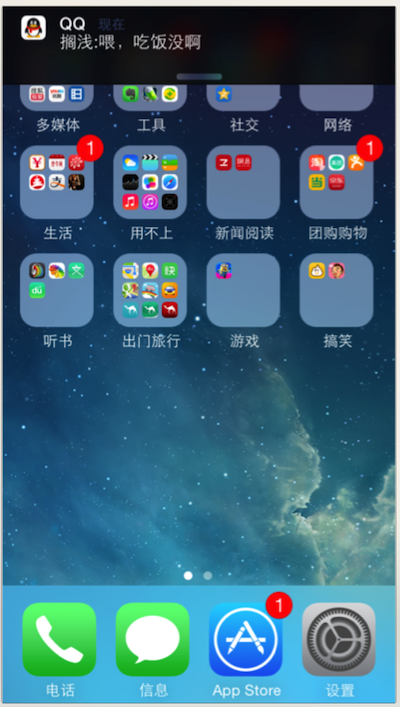
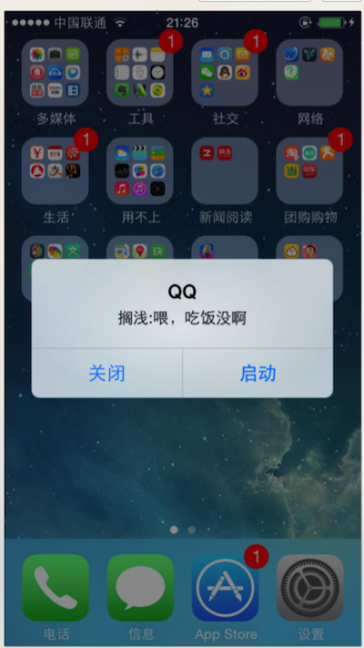
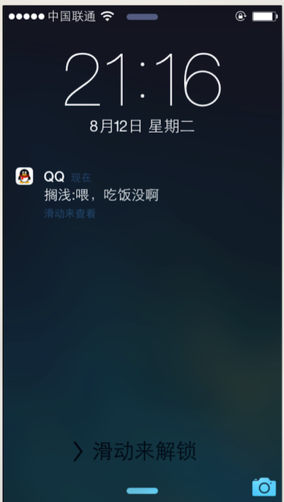

推送通知的介绍
什么是推送通知?
- 注意：这里说的推送通知跟NSNotification有所区别
- NSNotification是抽象的，不可见的
- 推送通知是可见的（能用肉眼看到）
- 作用:让不在前台(后台或者关闭)的APP知道APP内部发生的事情
- 效果:

- 通知的分类
- 本地通知
- 概念:由APP本身给应用程序推送消息,不需要服务器的支持
- 常见场景:记账软件定时提醒记账/番茄工作法中提醒你时间等等
- 注意:不是非常常用.
- 远程通知
- 概念:由服务器推送消息给用户,需要服务器的支持
- 常见场景:微信提醒新消息/淘宝提醒有新活动/视频软件提供您有最新电影
- 注意:非常常用.但是如果仅仅是给用户提醒,客户端(你)做的事情就非常简单.
- 推送通知的呈现样式(了解)
- 在屏幕顶部显示一块横幅
- 在屏幕中间弹出一个UIAlertView

- 锁屏界面也可以显示

- 收到通知时,同时播放音效.
- 收到通知时,改变APP图标上的数字